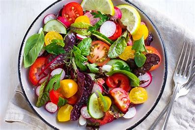

The Vegan Diet

What is the Vegan Diet?
The vegan diet is a popular plant-based eating lifestyle that
excludes all animal products, including meat, dairy, and eggs.
This diet focuses on consuming fruits, vegetables, grains, nuts,
and seeds, making it ideal for individuals looking to adopt a
health-conscious and environmentally friendly lifestyle. Whether
for ethical, environmental, or health reasons, veganism has gained
global appeal as a sustainable diet choice. Let's dive into what
makes this diet unique and beneficial.
The Benefits of a Vegan Diet
A vegan diet is rich in essential nutrients, such as fiber,
vitamins C and E, and antioxidants, all of which support overall
health and vitality. Studies show that vegans tend to have a lower
risk of heart disease, diabetes, and certain cancers due to the
reduced intake of saturated fats and processed foods.
Additionally, the plant-based nature of the diet supports better
digestion, improved skin health, and a lower carbon footprint,
making it a win for both personal health and the environment.
Since vegan diets focus on whole, unprocessed foods, they can be
an effective way to maintain a healthy weight while feeling full
and energized. Furthermore, this diet encourages creativity in the
kitchen, with a variety of plant-based foods and recipes that are
both satisfying and nutrient-dense.
How Does the Vegan Diet Work?
The vegan diet centers around whole plant foods. Vegans typically
base their meals on vegetables, legumes, grains, and protein-rich
plant sources like tofu and lentils. Plant-based alternatives, such
as almond or soy milk, provide options for traditional dairy
products. Unlike many diets, veganism is more a lifestyle choice,
focusing on ethical, environmental, and health benefits associated
with reducing animal products.
Vegans also avoid all animal-derived ingredients, like honey or
gelatin. As a result, the diet relies on a variety of fruits,
vegetables, and legumes, making it both diverse and adaptable for
personal preferences and seasonal produce availability.
Getting Started with the Vegan Diet
Transitioning to a vegan diet can be simple with these steps:
-
1. Educate Yourself: Learn about vegan sources of
protein, vitamins, and minerals to ensure balanced nutrition.
-
2. Stock Your Pantry: Keep essentials like
legumes, whole grains, nuts, and fresh produce at hand to make
quick, nutritious meals.
-
3. Experiment with Recipes: Try new vegan recipes
to find meals you love and can make a staple in your diet.
-
4. Gradual Transition: Consider starting with one
vegan day a week and slowly increasing to ease into the lifestyle.
-
5. Use Substitutes: Explore plant-based
alternatives for milk, cheese, and meat to make the switch easier.
Foods You Can Eat on a Vegan Diet
Here are staples you can enjoy on a vegan diet:
-
1. Fruits and Vegetables: Berries, leafy greens,
and citrus fruits.
-
2. Whole Grains: Brown rice, oats, quinoa, and
barley.
-
3. Legumes: Lentils, chickpeas, and black beans.
-
4. Nuts and Seeds: Almonds, chia seeds, and hemp
seeds.
-
5. Plant-Based Proteins: Tofu, tempeh, and
seitan.
Foods to Limit or Avoid

For a complete vegan diet, avoid these foods:
-
1. Animal Products: Meat, dairy, eggs, and fish.
-
2. Processed Foods: Limit foods high in added
sugars, refined oils, and preservatives.
-
3. Honey: Some vegans choose to avoid honey as it
is animal-derived.
-
3. Gelatin: Often used in candies, marshmallows,
and jellies, gelatin is derived from animal collagen.
-
3. Chocolate with Milk Solids: Milk or milk fat
is often found in milk chocolate, and some dark chocolates as
well, so look for vegan-certified chocolates.
Fun Tips to Enjoy the Vegan Diet
Add creativity and fun to your vegan journey with these tips:
-
1. Make Smoothies: Blend fruits and vegetables
for nutritious smoothies.
-
2. Experiment with Meat Alternatives: Try
plant-based meats to make familiar dishes vegan-friendly.
-
3. Explore Global Cuisines: Many international
dishes are naturally vegan or can be easily adapted.
-
4. Eat Seasonally: Choose seasonal produce for
fresh, flavorful meals.
Conclusion
The vegan diet offers a healthy and eco-conscious approach to
eating, focusing on plant-based whole foods. With its numerous
health benefits and versatility, a vegan lifestyle is accessible and
rewarding for many. If you're considering a shift to plant-based
eating, explore the array of vibrant, delicious foods available, and
enjoy the journey of nourishing yourself and the planet!